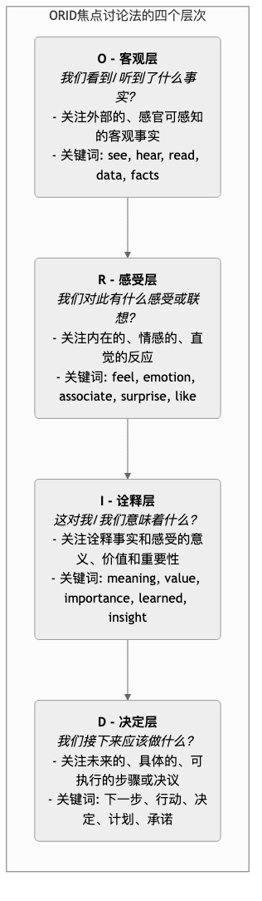

ORID焦点讨论法¶
在团队会议或复盘讨论中，我们常常会遇到这样的困境：讨论很快就陷入了对解决方案的争论，或者变成了少数人发表长篇大论的“一言堂”，而许多人则沉默不语，导致会议既没有达成共识，也没有产生真正的深度思考。ORID焦点讨论法（The Focused Conversation 方法），是一种强大而优雅的结构化引导技术，旨在解决这一难题。它通过将一次讨论，系统性地引导经过四个逻辑递进的层次，来确保团队能够从客观事实出发，深入到主观感受，再到诠释分析，并最终做出明智的决定。 ORID是四个层次的首字母缩写，它模拟了人类大脑处理信息、形成决策的自然过程： * O - 客观型（Objective）：关于事实和数据。 * R - 感受型（Reflective）：关于内心的反应和情感。 * I - 诠释型（Interpretive）：关于意义、价值和重要性。 * D - 决定型（Decisional）：关于未来的行动和决议。 通过严格地按照这个“O-R-I-D”的顺序来设计和引导提问，主持人可以确保每一个参与者都能在同一个“频道”上进行思考，避免了不同思维层次的混乱交锋。它能够创造一个安全的、有深度的对话空间，让团队的集体智慧得以真正地涌现。
ORID的四个层次详解¶
ORID的四个层次，像一个漏斗一样，将讨论从具体、客观的外部世界，逐步引导到抽象、深刻的内在世界，并最终回归到具体的未来行动。

如何设计和引导一场ORID讨论¶
成功地运用ORID，关键在于引导者（主持人）能够针对每一个层次，设计出一系列精准、开放、有逻辑的提问。 1. 第一步：准备阶段
* **明确讨论焦点**：清晰地定义本次ORID讨论的核心议题是什么。例如，“复盘我们上个季度的‘海豚’项目”。
* **设计ORID问题**：提前根据四个层次，设计好你的引导问题清单。每一层至少准备2-3个问题。
-
第二步：O - 客观层：建立共同的事实基础
- 目的：让所有参与者，都从同一个客观、无争议的事实起点出发。这一步旨在“清空大脑”，排除主观臆断。
- 引导问题示例：
- “当我们回顾‘海豚’项目时，你看到了哪些具体的数据或事实？”
- “请回想一下，在项目过程中，你印象最深刻的一句话或一个场景是什么？”
- “如果我们看项目的时间线，哪些关键的事件节点发生了？”
-
第三步：R - 感受层：连接个人内在体验
-
目的：在事实的基础上，为团队的情绪和直觉感受，提供一个安全的表达空间。这一步有助于建立团队的信任和心理安全感。
- 引导问题示例：
- “在项目的哪个阶段，你感到最有能量或最兴奋？”
- “哪个时刻让你感到最焦虑、沮丧或困惑？”
- “当听到客户的最终反馈时，你内心的第一反应是什么？”
-
第四步：I - 诠释层：发掘深层意义与洞察
-
目的：这是讨论的“价值升华”阶段。引导团队从事实和感受中，提炼出更深层次的意义、规律和学习要点。
- 引导问题示例：
- “这次项目的成功（或失败），对我们团队来说，最重要的价值和意义是什么？”
- “我们从中学到的、最宝贵的一个教训是什么？”
- “这个项目是如何改变我们对‘客户需求’的理解的？”
-
第五步：D - 决定层：形成清晰的未来行动
-
目的：将前面所有的讨论，最终转化为具体的、可落地的未来行动或决议，确保会议产生实际的成果。
-
引导问题示例：
-
“基于我们今天的讨论，为了让我们下一个项目更成功，我们需要做出的第一个、最重要的改变是什么？”
-
“我们应该立即开始做什么？停止做什么？继续做什么？”
- “关于下一步的行动，谁来负责？完成的时间节点是什么？”
-
应用案例¶
案例一：项目复盘会
- 焦点：复盘一个刚刚结束的、有成功也有失败的复杂项目。
-
ORID应用：
- O：“让我们先来回顾一下项目的数据：最终交付日期比原计划晚了多久？预算超支了多少？用户活跃度指标是多少？”
- R：“在项目延期最严重的那一周，大家普遍的感觉是怎样的？”
- I：“我们从这次延期中，学到的关于‘跨部门沟通’的最重要的教训是什么？”
- D：“为了避免未来再出现类似问题，我们决定，在所有跨部门项目中，必须在启动阶段就建立一个清晰的RACI责任矩阵。这件事由项目管理办公室负责，在下个季度前完成。” 案例二：读完一本书后的团队学习分享会
-
焦点：团队成员共同阅读了《精益创业》后，进行学习分享。
-
ORID应用：
- O：“书中让你印象最深刻的一个概念、一个故事或一句话是什么？”
- R：“读到‘MVP’这个概念时，你联想到了我们自己哪个失败的产品？当时有何感触？”
- I：“这本书的核心思想，对于我们当前的产品开发流程，最大的启发和挑战是什么？”
- D：“我们决定，在下一个新功能的开发中，尝试进行一次‘着陆页MVP’的实验。由产品经理小王负责，在两周内上线。” 案例三：处理一次团队冲突后的调解会议
-
焦点：帮助两位因工作分歧而产生矛盾的同事，进行开放、有建设性的对话。
-
ORID应用：
- O：主持人引导双方，客观地陈述“昨天下午会议上，具体发生了什么？你说了什么？他说了什么？”（只说事实，不加评判）。
- R：“当听到对方那样说时，你内心的感受是什么？（感到委屈、被误解、愤怒？）”
- I：“你认为，这次冲突背后，真正重要但没有被双方理解的需求是什么？这对你们未来的合作关系意味着什么？”
- D：“为了未来能更有效地合作，你们双方愿意共同承诺做出的一项行为改变是什么？”
ORID的优势与挑战¶
核心优势
-
提升会议深度与质量：通过结构化的引导，确保讨论能层层深入，直达核心。
- 确保全员参与：四个层次的设计，特别是O层和R层，为那些不善言辞或性格内向的成员，提供了安全的、容易参与的发言机会。
- 建立团队共识：从共同的事实基础出发，逐步走向共同的决定，极大地促进了团队的共识形成。
-
通用性强：可以应用于项目复盘、战略讨论、团队建设、培训分享等几乎任何需要深度对话的场景。 潜在挑战
-
对主持人的要求高：ORID的成功，高度依赖于主持人对流程的熟练掌握和对提问技巧的精心设计。一个好的主持人，是ORID讨论的灵魂。
- 需要时间：一次有深度的ORID讨论，需要给予充足的时间，不适合用于需要快速做出紧急决策的场景。
- 需要参与者的投入：需要所有参与者都愿意遵循这个结构，进行开放、坦诚的分享。
延伸与关联¶
- 行动研究（Action Research）：ORID是行动研究中，“反思（Reflect）”这一环节极其有效的具体操作工具。
- 欣赏式探究（Appreciative Inquiry）：ORID可以与欣赏式探究的理念结合，通过设计正向的、聚焦于优势和成功经验的ORID问题，来引导一次积极的、赋能的讨论。
来源参考：ORID焦点讨论法由加拿大应用文化协会（ICA Canada）在上世纪70年代开发，是其“参与的技术（Technology of Participation, ToP）”系列引导方法中的核心工具之一。劳拉·斯宾塞（Laura Spencer）的《焦点讨论法》（Winning Through Participation）和布莱恩·斯坦菲尔德（R. Brian Stanfield）的《提问的艺术》（The Art of Focused Conversation）是该方法的权威参考书。